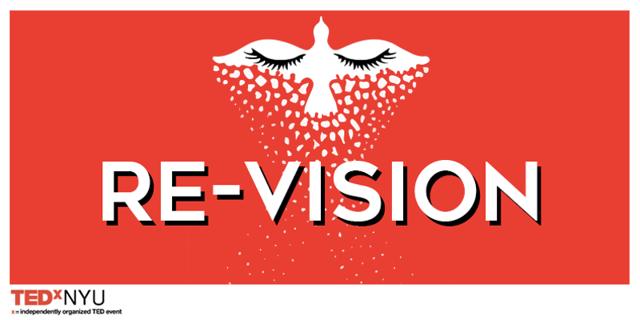

TEDxNYU: Re-Vision

We invite you to the 8th Annual TEDxNYU Conference: Re-Vision.
This year's theme invites us to look at the world around us and reflect
on the direction our society is heading. What is the future we envision
and are we on the path to get there? This year, our speakers will bring
you into the paths they have forged to achieve their re-vision of the world.
Together, let's reflect and ask ourselves: are we happy with what we see?